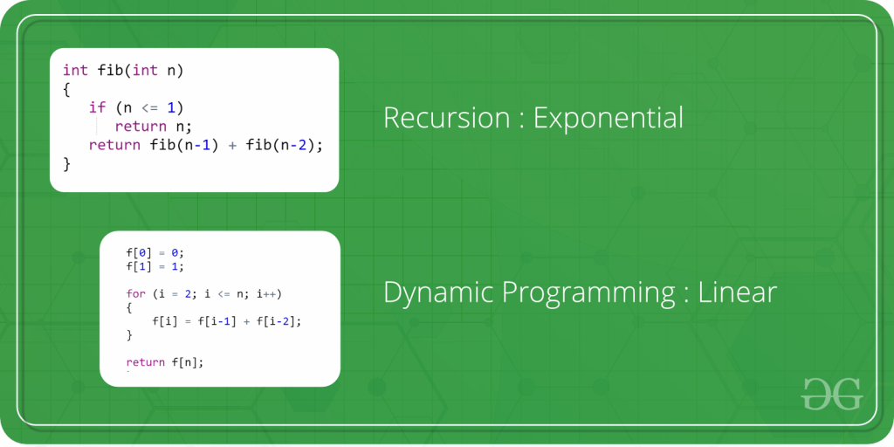

Getting Started
Dynamic Programming is mainly an optimization over plain recursion. Wherever we see a recursive solution that has repeated calls for same inputs, we can optimize it using Dynamic Programming. The idea is to simply store the results of subproblems, so that we do not have to re-compute them when needed later. This simple optimization reduces time complexities from exponential to polynomial.
Topics:
- What is memoization? A Complete tutorial
- Introduction to Dynamic Programming – Data Structures and Algorithm Tutorials
- Tabulation vs Memoizatation
- Optimal Substructure Property
- Overlapping Subproblems Property
- How to solve a Dynamic Programming Problem ?
- Bitmasking and Dynamic Programming | Set 1
- Bitmasking and Dynamic Programming | Set-2 (TSP)
- Digit DP | Introduction
- Sum over Subsets | Dynamic Programming
Standard problems on Dynamic Programming:
-
Easy:
- Fibonacci numbers
- nth Catalan Number
- Bell Numbers (Number of ways to Partition a Set)
- Binomial Coefficient
- Coin change problem
- Subset Sum Problem
- Compute nCr % p
- Cutting a Rod
- Painting Fence Algorithm
- Longest Common Subsequence
- Longest Increasing Subsequence
- Longest subsequence such that difference between adjacents is one
- Maximum size square sub-matrix with all 1s
- Min Cost Path
- Minimum number of jumps to reach end
- Longest Common Substring (Space optimized DP solution)
- Count ways to reach the nth stair using step 1, 2 or 3
- Count all possible paths from top left to bottom right of a mXn matrix
- Unique paths in a Grid with Obstacles
-
Medium:
- Floyd Warshall Algorithm
- Bellman–Ford Algorithm
- 0-1 Knapsack Problem
- Printing Items in 0/1 Knapsack
- Unbounded Knapsack (Repetition of items allowed)
- Egg Dropping Puzzle
- Word Break Problem
- Vertex Cover Problem
- Tile Stacking Problem
- Box-Stacking Problem
- Partition Problem
- Travelling Salesman Problem | Set 1 (Naive and Dynamic Programming)
- Longest Palindromic Subsequence
- Longest Common Increasing Subsequence (LCS + LIS)
- Find all distinct subset (or subsequence) sums of an array
- Weighted job scheduling
- Count Derangements (Permutation such that no element appears in its original position)
- Minimum insertions to form a palindrome
- Wildcard Pattern Matching
- Ways to arrange Balls such that adjacent balls are of different types
-
Hard:
- Palindrome Partitioning
- Word Wrap Problem
- The painter’s partition problem
- Program for Bridge and Torch problem
- Matrix Chain Multiplication
- Printing brackets in Matrix Chain Multiplication Problem
- Maximum sum rectangle in a 2D matrix
- Maximum profit by buying and selling a share at most k times
- Minimum cost to sort strings using reversal operations of different costs
- Count of AP (Arithmetic Progression) Subsequences in an array
- Introduction to Dynamic Programming on Trees
- Maximum height of Tree when any Node can be considered as Root
- Longest repeating and non-overlapping substring
- Learn Data Structure and Algorithms | DSA Tutorial
- Top 20 Dynamic Programming Interview Questions
- ‘Practice Problems’ on Dynamic Programming
- ‘Quiz’ on Dynamic Programming
"Dynamic programming: where we play the game of 'connect the dots' with code, hoping the final picture makes sense... and doesn't look like a tangled spaghetti dish!"
Reference books:
- "Introduction to Algorithms" by Thomas H. Cormen, Charles E. Leiserson, Ronald L. Rivest, and Clifford Stein
- "Algorithm Design" by Jon Kleinberg and Éva Tardos
- "Dynamic Programming for Coding Interviews" by Meenakshi and Kamal Rawat
- "Algorithms" by Robert Sedgewick and Kevin Wayne
- "Elements of Programming Interviews in Python/C++" by Adnan Aziz, Tsung-Hsien Lee, and Amit Prakash